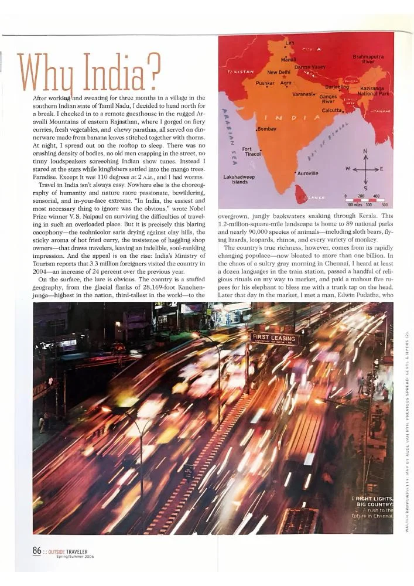

Why India?

An immersive journey through India’s landscapes, daily rituals, and restless energy, from Tamil Nadu to Rajasthan.
View PDF here »PDF · 4.0 MB← Back to Travel and Adventure
An immersive journey through India’s landscapes, daily rituals, and restless energy, from Tamil Nadu to Rajasthan.
View PDF here »PDF · 4.0 MB← Back to Travel and Adventure